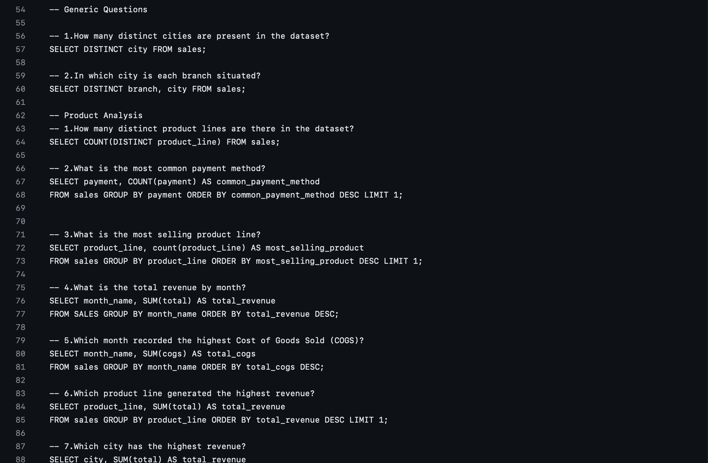
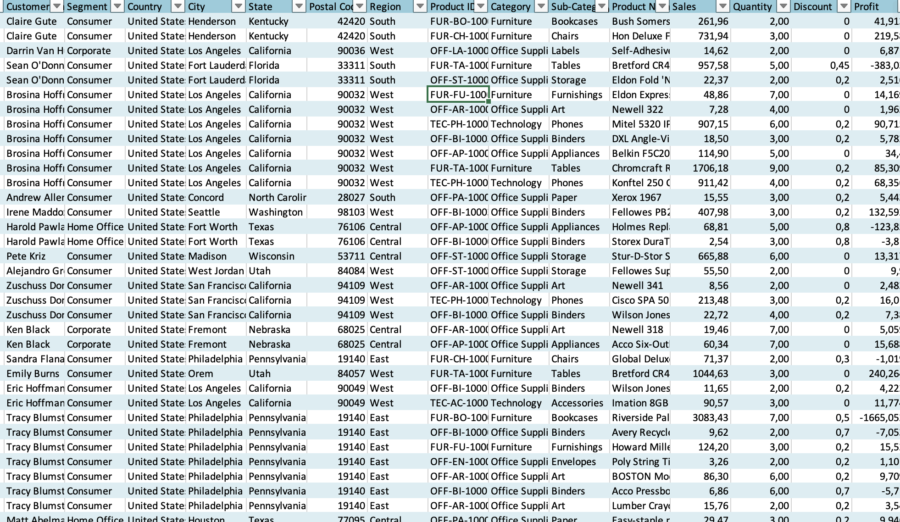
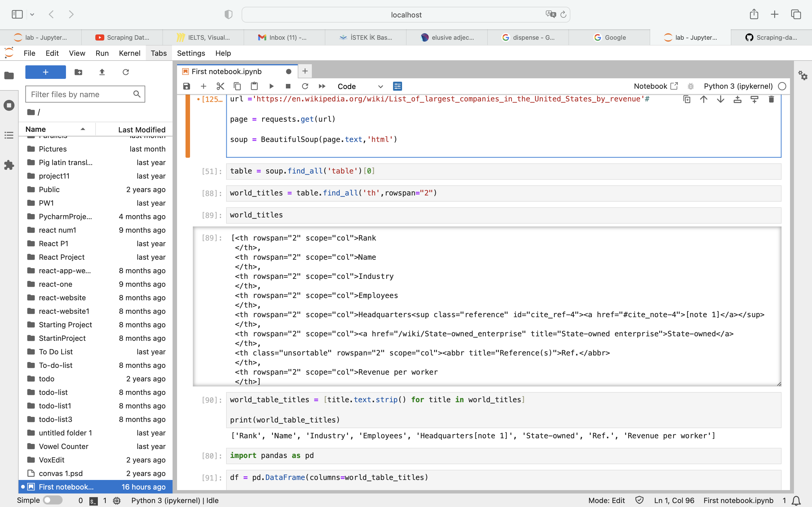

APRIL 01, 2024
During the project, the following tasks were performed:
Extensive Data Wrangling: A comprehensive data wrangling process was conducted to prepare the complex dataset for analysis. This involved addressing data quality issues, ensuring data reliability, and optimizing the dataset for subsequent analysis.
Data Transformation and Cleansing: Advanced SQL techniques such as CASE statements, JOIN operations, views, and Common Table Expressions (CTEs) were utilized to transform and cleanse the data. These techniques allowed for efficient data manipulation and handling complex data transformations.


The Nashville Housing project focuses on data cleaning and normalization
procedures for a dataset containing housing information. This project involves
tasks such as handling null values, identifying and resolving data redundancies,
and normalizing address information. Techniques like CASE statements, string manipulation
functions, and CTEs are utilized for cleaning and organizing the data. Additionally,
redundant columns are removed to adhere to normalization principles. The project aims to
enhance data quality and structure for improved analysis and usability.

Initially, the focus was on a dataset devoid of actionable insights for decision-makers.
Operations began with a comprehensive understanding of the data, followed by meticulous
cleaning and augmentation using Power Query. Calculations, such as determining the Cost
of Goods Sold (COGS), were integrated, along with additional columns to facilitate analysis.
Subsequently, pertinent questions were posed to extract meaningful insights. These inquiries
encompassed customer loyalty enhancement, performance monitoring, and customer experience
evaluation. The subsequent step involved summarizing and deriving answers from pivot tables,
with a keen emphasis on designing an intuitive dashboard for effective communication of
insights. Additionally, calculations pertaining to Key Performance Indicators (KPIs) were
conducted to assess sales officials' performance against targets.

Web scraping is a technique used to extract data from websites. Wikipedia,
being a vast source of information, is often scraped for various purposes such as
research, analysis, and data visualization. In this tutorial, we will demonstrate how to scrape data
from Wikipedia using Python, Jupyter Notebook, and the pandas library.